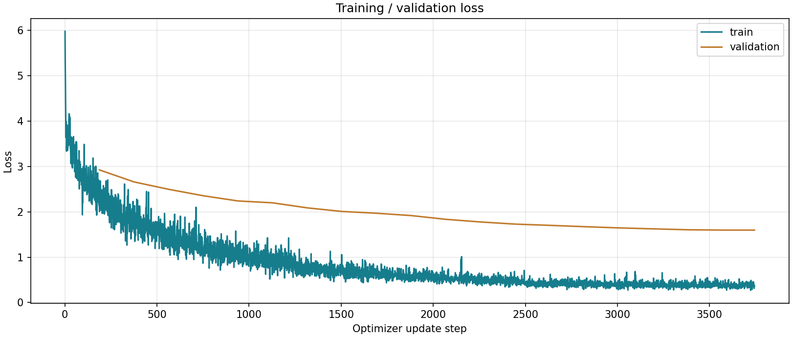
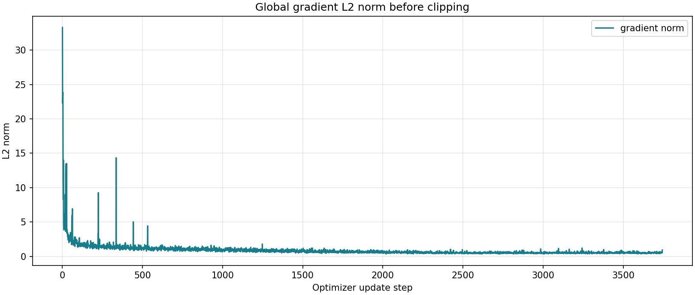
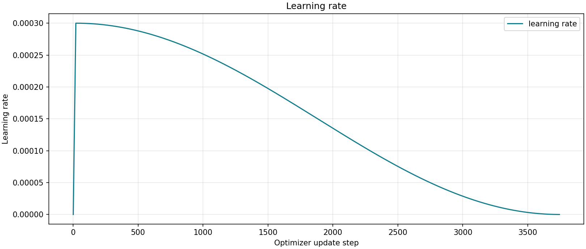
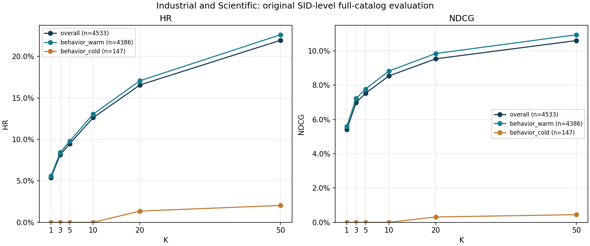
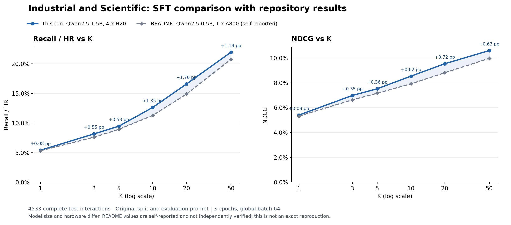

Industrial_and_Scientific 原项目 SFT 实验
北京时间 2026-11-16T16:31:11.232619+08:00 · 训练：completed · 全量验证：passed
复用原始 SID 与数据划分，历史长度1–10；全量商品目录、beam=50、逐原始测试行计算。未运行 RL。
训练 PDF · 验证 PDF · 训练 JSON · 验证 JSON · 分组 CSV
训练
| 项目 | 记录 |
|---|
| 底模 | /mnt/ossdata/ziweizhao/weights/Qwen2.5-1.5B |
| 训练状态 | completed |
| 最佳 checkpoint | /mnt/ossdata/ziweizhao/weights/checkpoints/MiniOneRec/Industrial_and_Scientific_enddonkey/sft/checkpoint-3572 |
| 梯度统计 | {'count': 3744, 'mean': 0.8711953739770967, 'max': 33.29885482788086, 'last100_mean': 0.5236487570405006} |
训练与验证 loss

梯度范数

学习率

整体、冷暖组与 SID 冲突诊断
行为冷按训练行为中的商品 ID 判定，商品仍可参加全目录 SID↔文本辅助训练。HR 在单目标协议下等同 Recall。
| 项目 | 实际值 |
|---|
| 完整测试行 | 4533 |
| 商品数 / 唯一 SID | 3686 / 3670 |
| 冲突 SID 组 / 涉及商品 | 15 / 31 |
| 行为冷商品数 | 37 |
| 冷目标与暖商品共用 SID 的行数 | 0 |
| 分组 | 样本数 | HR@10 | NDCG@10 | HR@50 |
|---|
| overall | 4533 | 12.61857% | 8.53686% | 21.95014% |
| behavior_warm | 4386 | 13.04150% | 8.82298% | 22.61742% |
| behavior_cold | 147 | 0.00000% | 0.00000% | 2.04082% |
| repeat_last | 122 | 88.52459% | 79.56806% | 93.44262% |
| not_repeat_last | 4411 | 10.51916% | 6.57227% | 19.97280% |
| collision_free | 4216 | 7.99336% | 4.68261% | 17.50474% |
| collision_affected | 317 | 74.13249% | 59.79711% | 81.07256% |
| behavior_cold_collision_free | 147 | 0.00000% | 0.00000% | 2.04082% |
| behavior_cold_collision_affected | 0 | — | — | — |
原始 SID 冲突意味着部分商品不可区分；主指标沿用原项目 SID 匹配，同时给出无冲突子组。冷暖、重复与冲突分层维度会重叠，不能把所有行数相加。

复现仓库 SFT-only 对照
The primary benchmark is Enddonkey/MiniOneRec-Reproduction README SFT Only, self-reported and not independently verified. It uses Qwen2.5-0.5B Base on one A800; this run uses the recorded 1.5B Base model on four H20 GPUs. The actual run_config.json governs this run's epochs, batch and scheduler. Score differences do not establish an exact reproduction.
参考值来自仓库 README 自报结果，未经本实验独立复核；参考底模为0.5B，本次为1.5B，GPU与实际训练设置差异需一并比较。
Enddonkey/MiniOneRec-Reproduction 复现实验报告
| K | 仓库 SFT-only HR | 仓库 SFT-only NDCG |
|---|
| 1 | 5.32000% | 5.32000% |
| 3 | 7.61000% | 6.63000% |
| 5 | 8.93000% | 7.16000% |
| 10 | 11.27000% | 7.92000% |
| 20 | 14.87000% | 8.81000% |
| 50 | 20.76000% | 9.97000% |
最终结论与原实验对照
本次整体 HR@10=12.6186%、NDCG@10=8.5369%；较仓库自报 0.5B SFT-only 的 11.27%、7.92% 分别高 1.3486、0.6169 个百分点。六个 K 的点估计均更高，整体达到参考水平；模型规模与 GPU 设置不同，结果不构成仅由模型规模造成提升的证明。
行为冷组 Top10 为 0/147；Top50 仅 3/147，HR=2.0408%、NDCG=0.4499%，且这3次命中全部属于同一商品（37个冷目标仅1个曾被命中）。37个目标均参加 SID↔标题辅助任务，说明辅助曝光尚未充分转化为推荐能力。冷商品泛化问题仍存在；冷组规模较小，结论限定于本次测试。
原 SID 的15组冲突涉及31个商品，整体沿用原项目的SID级匹配。无冲突子集（4216条）HR@10=7.9934%、NDCG@10=4.6826%，作为补充诊断，不能直接与全体参考值比较。
下图蓝线为本次1.5B整体结果，灰色虚线为README自报0.5B SFT-only；上方冷暖图深蓝为整体、青色为暖组、橙色为行为冷组。HR在本单目标协议下等于Recall。

精确对照数据 · 结论JSON · 数据诊断
补充：原仓库预测文件的冷组复算
原仓库未单列发布冷组指标，但提供完整逐条预测。我们核对全部4533条预测的有序历史与目标，并复算相同的147条、37商品行为冷组；两份预测的整体指标均与README的百分比四舍五入值一致。下列原模型冷组数字属于本次事后补算，不是原仓库单独公布的冷启动成绩。
| 模型 | HR@10 | NDCG@10 | HR@50 | NDCG@50 |
|---|
| 原仓库0.5B SFT（预测文件补算） | 0.6803% | 0.2146% | 2.0408% | 0.4545% |
| 原仓库0.5B SFT+RL（预测文件补算） | 0.6803% | 0.2146% | 2.0408% | 0.5020% |
| 本次1.5B SFT | 0.0000% | 0.0000% | 2.0408% | 0.4499% |
原模型Top10仅命中1/147条、Top50仅3/147条，说明行为冷商品表现弱也存在于原模型。本次1.5B整体指标提升尚未带来明确的冷组提升；Top10仅差一条命中，需结合小样本限制判断。
补算方法、来源哈希和完整指标JSON · 完整分组CSV
补充核查：实际训练过程并非完全一致
原仓库README写cosine，但实际提供的3744条训练学习率日志全部精确符合warmup20+linear decay。本次显式使用README所述cosine。因此，数据、SID、训练任务、全局batch64、3轮和3744步一致；模型0.5B→1.5B、单卡→四卡（累积8→2）以及实际调度器linear→cosine存在差异。本次属于同数据同任务的配置变体，不能作为仅改变模型规模的严格对照。调度器这一项未对齐原实际执行过程。
冷组Top10差异对应同一测试行1012、商品2076：原模型排第8，本次排第18，造成1/147与0/147的阈值差异。现有单次实验无法隔离究竟是哪项训练差异导致该排名变化。
完整学习率日志拟合核查